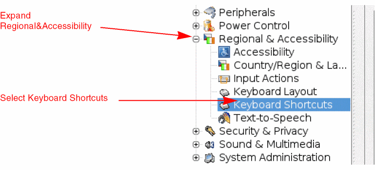
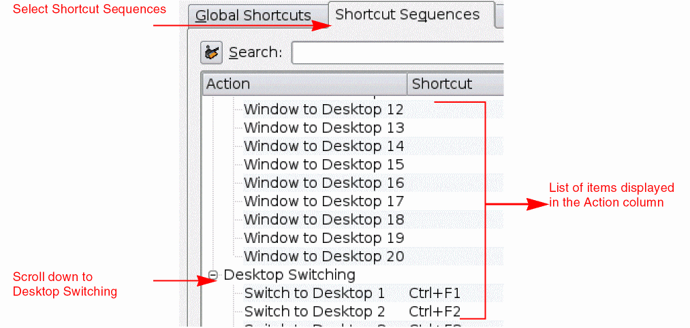
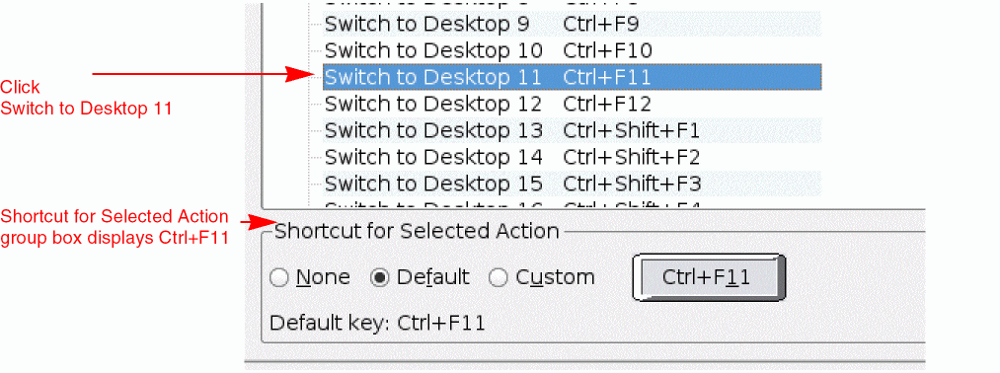
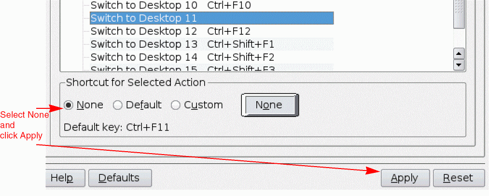

Cadence User Interface SKILL
This document describes the known issues with Cadence® User Interface and suggests the workarounds for these issues. Each issue is identified by a Cadence Change Request (CCR) number.
Related Documentation
Cadence Change Requests
CCR 1159213: When working on Virtuoso in K Desktop Environment (KDE), Ctrl+F11 switches desktops instead of toggling toolbars.
Description: In KDE, the shortcut sequence Ctrl+F<number> is used for switching desktop displays to the specified <number>. So, for example, pressing Ctrl+F1 will switch the display to desktop 1, Ctrl+F2 will switch the display to desktop 2 and if you have 11 desktops then pressing Ctrl+F11 will switch the display to desktop 11. However, this conflicts with the behavior of the bindkey Ctrl+F11 that is used for toggling toolbars in Virtuoso.
Solution: When working in KDE, the workaround is to disable the shortcut sequence Ctrl+F11 by following these steps:
-
In a terminal window, type
kcontroland pressEnterto open the KDE Control Center window. -
In the KDE Control Center window, on the left pane, expand Regional & Accessibility and select Keyboard Shortcuts. The Keyboard Shortcuts pane is displayed on the right.
 -
On the Keyboard Shortcuts pane, select the Shortcut Sequences tab and scroll down to Desktop Switching. In the Action column, a list of items such as Switch to Desktop 1, Switch to Desktop 2, and so on is displayed.
 -
Click Switch to Desktop 11. The corresponding shortcut,
Ctrl+F11,
 -
Select None and click Apply. The shortcut sequence,
Ctrl+F11, no longer switches the desktops and can now be used for toggling toolbars.

Ctrl+F<number>) that you want to enable for Virtuoso.CCR 1078617: CapsLock state is not passed on remote servers and therefore impacts bindkey behavior.
Description: On a remote server when you press any letter key, the state of the CapsLock key is not passed. In addition, having the CapsLock key ON causes the Shift key state to be reversed. So, for example, if the Z key is pressed with both the CapsLock and Shift keys pressed, the program will be passed an unShifted Z, which appears the same as pressing Z with neither CapsLock nor Shift pressed to the program. This impacts the bindkey behavior since the bindkey code treats the binding keys in the same state and therefore produces the same results.
Solution: When working on remote servers, a possible workaround is to work with the CapsLock key off.
CCR 930231: How to redefine a callback for a field in a form?
Description: You cannot redefine a callback for a field in a form after the form is created and displayed.
For example, you have set the callback while creating a <hiCreateButtonBoxField> field in the <hiCreateAppForm> form and want to change the callback for the <hiCreateButtonBoxField> field later. You can determine the associated callback i.e., <_callback> from the properties of the field and overwrite it as shown below:
hiGetCurrentForm() -> field_ViewSummary ->_callback = list("printf(\"changed callback\")");
If you check the properties of the field, the callback is changed. However, if you click the button, the old callback is called.
Solution: You can work around this situation in one of the following ways:
- Design the field callback in a way where the callback is associated with a function that can be modified.
- Delete the field from the form and add a new, identical field with a different callback.
CCR 438513: On KDE, windows do not redraw correctly when they are stretched
Description: If you are running Virtuoso applications in the KDE desktop on Linux, when you resize a window, the contents of the window (including toolbars) can become blank. This problem occurs if a window manager setting specifies that the windows be redrawn as the mouse is being moved, instead of being redrawn only once when the mouse is released.
- Open the KDE Control Center.
- In the list of topics in the left pane, expand Desktop, then select Window Behavior.
- In the Moving tab, in the Windows section, deselect the Display contents in resizing windows option.
- Click Apply.
CCR 341718: hiTreeTableSelectAllItems only works correctly after form has been instantiated
Description: hiTreeTableSelectAllItems works initially when a form is displayed but after an item is deselected, it no longer works.
Solution: Call hiTreeTableSelectAllItems after the form is displayed, that is, after hiDisplayForm is called.
CCR 377616: Modal dialog focus problems with twm NoTitleFocus setting
Description: In the twm window manager, sometimes fields in modal dialog boxes do not regain focus when you click them after clicking another window. This problem occurs when NoTitleFocus is set in the .twmrc file.
Solution: Do not use the NoTitleFocus setting with twm.
CCR 64048: Virtuoso applications go blank if you click a hyperlink after Netscape crashes
Description: If you click a hyperlink in a hypertext field after Netscape has crashed, Virtuoso application windows and forms go blank.
Solution: Kill the Netscape process.
CCR 22817: In report fields, invalid packed list value is being used partially
Description: In a report field, if you specify an invalid packed list as the value of the field, the packed list is used partially. For example, if you specify the packed list ’((2 5 9) 11), items 2, 3, 4, 5, and 11 are selected in the field and ?value is set to ((2 5 9) 11).
Solution: Use the correct syntax for packed lists. In the above example, a valid packed list would have been ’((2 5) 11). See the description of hiCreateReportField in the Cadence User Interface SKILL Reference for more information.
General Issues
Problem: Dockable window gets smaller
Description: When you repeatedly undock and dock a window in a dock area that has multiple dockable windows, the window gets slightly smaller each time you dock it. This is due to an underlying Qt problem.
Solution: Resize the window after you dock it.
Problem: Cannot define draw-through commands and pop-ups for the same mouse button
Description: Any mouse button defined as a pop-up cannot be used as a draw-through command. If you use it, the pop-up menu is not usable and disappears after you release the mouse button.
Solution: Do not define a draw-through command and pop-up for the same mouse button.
Problem: Mouse button is difficult to double-click
Description: Some users find it difficult to double-click the mouse buttons.
Solution: You can define the timeout value for the double-click and the distance for the draw-through command. You can change the multiclick time from the User Preferences form on the Set Options menu of the CIW. Use the following command:
hiSetMultiClickTime(clickTime)
clickTime is the timeout interval in milliseconds between the two button clicks. The default is 200 milliseconds. You cannot set the multiclick time to less than 50 milliseconds. hiGetMultiClickTime returns the current setting of the timeout interval for the double click.
hiSetDrawThruDelta(delta) is the distance the mouse moved from the starting click to be interpreted as a draw-through. The default is 5 pixels. You cannot set an interval of less than 3 pixels. hiGetDrawThruDelta returns the current setting of the draw-through delta.
Problem: Bindkeys getting unset intermittently
Description: Sometimes, bindkeys get stuck or do not work while using Virtuoso applications. This problem occurs if you use the numeric keypad with NumLock turned on.
Solution: On Solaris 2.7, install the following Sun patch:
On Solaris 2.8, install the following Sun patch:
Until you install the patches, use the following workaround:
-
Do not use the numeric keypad. Use the number keys on the top row of the keyboard instead.
If your bindkeys are not working, to restore them to the original binding, try the following:
Problem: Do not use cancelEnterFun before invoking a new enterfunction
Description: In SKILL code, when an enterfunction is currently active, do not use cancelEnterFun before invoking a new enterfunction or you might get unexpected behavior; use changeNextEnterFun instead.
Problem: The MultiRep enter function is blocked by other enter functions
Description: Commands such as Copy and Move, which use the enterMultiRep procedure to allow operations across windows containing different cellviews, might not work correctly in certain situations. For example, you cannot Copy or Move from window A to window B if window B already has another enter function active.
Solution: If you cancel or terminate the enter function in window B, you can finish the Copy or Move.
Problem: Enter functions do not accept window IDs
Description: The enter functions do not accept a window ID at the SKILL level.
Solution: If you have a command for a specific window, make the window the current window before calling the enter function. To make a window current, use hiSetCurrentWindow(windowId).
Problem: Enter function done procedure is called with a variable number of arguments
Description: If you start an enter function with the acceptString flag set to t, the argument list passed to the done callback of that enter function has a different number of arguments, depending on whether you supply points or a string.
Solution: The following SKILL code using the @rest argument list keyword is one solution.
;
; This procedure acts as the entry point for the example.
; procedure( testIt() enterBox( ?acceptString t ?doneProc "doneCB" ) ) ; ; The following callback procedure first checks if a ; string is being passed in, then it checks if ; the function was canceled or finished successfully. ; procedure( doneCB( @rest rest ) if( length(rest) == 1 && stringp(car(rest)) then printf("The user entered the string: %s" car(rest))
else if( cadr(rest) == nil then
printf("The user canceled the command.")
else
printf("The user entered the box:%L"caddr(rest))
) ))
Problem: Hide/Cancel on options form hides the wrong options form
Description: If more than one enter function’s options form is currently being displayed, clicking the Hide button of the non-active enter function’s options form causes the active enter function’s form to disappear. Clicking Hide again on the non-active form causes the active form to reappear.
There is no workaround available.
Problem: Drawthrough affects next enter function’s option form
Description: The options form associated with an enter function will sometimes not appear even though “Options Displayed When Commands Start” is selected in the User Preferences form (expertMode == nil) if a drawthrough command was executed just prior to invoking the enter function.
Solution: Press the F3 key to make the form appear.
Problem: Form field format can affect form values
Description: When you specify a format, such as %gpF, SKILL interprets the p portion of the format to mean pico (10e-12). Any character immediately following a number, if any, is taken as a modifier.
Solution: Leave a space between the format of the input and the actual number (for example, %g pF ) or put the units in a separate field (such as a cyclic).
Problem: Toggle fields are not displayed with correct values
Description: If you place a toggle field in a form before it displays and then change using form–>togglefield–>value = newValueList, the form can show incorrect values when initially displayed.
When you create a form, a toggle field has its values stored at two levels: once at the toggle field level and once at the toggle item level. There is no way to keep these two entities the same once you create the form but have not yet displayed it. Thus, the values stored at the toggle item level override.
Solution: Set or query form–>togglefield–>toggleitem–>value, rather than set the value at the field level to ensure that the form reflects the new values when it displays for the first time.
Problem: Toggle button text can be truncated if the field prompts are long
Description: On one-dimensional forms, the input area of all fields is left-justified to the end of the longest field prompt. If prompts are long, the input area of fields might be limited because of the fixed width of one-dimensional forms. In the case of toggle and radio fields, these buttons are clipped with no way of seeing the missing buttons if the space provided is inadequate.
Solution: You can split the field prompts and input area into two separate lines using standalone labels. Or you can specify the width of the field on a two-dimensional form. Toggle and radio fields can also have their buttons placed on multiple lines using the ?itemsPerRow parameter.
Problem: Format specification and field value problem
Description: Form fields format whatever data is in the type-in field. If you supply a format string with your type-in field and that format appears in the field, you can have problems if you change the value of the field but do not remove the format string.
If a string field has a format of “%s inches,” formatting an input of “10” produces “10 inches” in the field. If you then change only the “10” portion of the field to “20,” but do not remove the “inches,” the field shows “20 inches inches” because the “20 inches” shown in the field was taken as input and then formatted.
Solution: Remove both the data and the format string when you change the data and format string.
Problem: Entering leading zeroes in numeric fields results in octal interpretation
Description: If a number is immediately preceded by a zero, SKILL interprets this as an octal number.
Solution: Use the Backspace key to delete the zero before you type a new number.
Problem: Two-dimensional forms are sometimes illegible because of large font sizes
Description: If you changed your label font using hiSetFont to a larger font than the default label font size ("-*-helvetica-bold-r-*-*-12-*"), some two-dimensional forms might display illegibly. The labels in some two-dimensional form fields can overlap.
Solution: Create forms with a normal font size. To return the font to the default (so that the forms display correctly), execute the following SKILL function:
hiSetFont("label" "-*-helvetica-bold-r-*-*-12-*")
Problem: Integer field in a form displays incorrectly if the integer is large
Description: If you type a large integer, such as 10000000000000, into an integer field that has a range of positive integers only (such as range = list(1 nil)), you can get the following warning:
*WARNING* int is less than min range (1 nil) value - setting back to previous value.
However, the field might not be reset correctly to the previous value, and the field value is set to a random number. The field reflects this incorrect value.
Solution: Cancel the form and redisplay it so the field is reset to its previously saved value. Or type in a new value for this field.
Use a float field if you want the field to accept larger numbers.
Problem: Return behavior from hiDisplayForm is unpredictable
Description: hiDisplayForm does not return until you dismiss the form. If multiple forms are displayed, any code after the hiDisplayForm of the first form displayed is not executed until all other forms are dismissed. For example:
procedure(form1() hiDisplayForm(form1)
printf("form1 down\n")
) procedure(form2() hiDisplayForm(form2)
printf("form2 down\n")
) form1() ; form1 is displayed form2() ; form2 is displayed
<Cancel form1>
<Cancel form2>
"form1 down"
"form2 down"
The printf statement in form1 is not executed until both forms are dismissed.
Solution: Forms “block” as they have in previous versions of the software. Do not write code that depends on this blocking behavior because you cannot control how many forms are pushed on the stack (as in the example above).
Instead, write code in the form of callbacks, which always execute when the form’s OK, Apply, or Cancel buttons are pressed. Also, hiCreateAppForm has an argument, ?dontBlock, which prevents programmatic blocking for that form.
Problem: hiDisplayForm in prog leaves local variables accessible from the CIW
Description: The blocking behavior of forms can leave local variables in the procedure prog or let available to the user.
field = hiCreateStringField( ?name ’x ?value "x" ) hiCreateForm( ’form "form" "t" list( field ) ) a = "outside" procedure( test() prog( ( a ) a = "inside" hiDisplayForm( form )
)
)
[1] load the following code.
[2] print the value of a ("outside")
[3] execute test() (form pops up)
[4] print the value of a ("inside"!)
[5] cancel the form.
[6] print the value of a ("outside")
Solution: Use non-program-blocking forms by using hiCreateAppForm and pass ?dontBlock as one of the arguments. Refer to the User Interface SKILL Functions Reference for more information about the hiCreateAppForm ?dontBlock argument.
Problem: A float field incorrectly displays the value input if the float value exceeds a maximum
Description: A float field displays the value incorrectly if you input a large number.
Solution: If the number entered is not in scientific notation (for example, 1e20) or does not contain a decimal point, it is converted into an integer (which may overflow) before being converted into a float. This results in an incorrect number.
To ensure correct translation, always include a decimal point at the end of the whole number or use scientific notation.
100000000000000000000
100000000000000000000.
100000000000000000000.0
1e20
Problem: Form names with spaces cause problems
Description: Whenever a space character appears in a symbol of a form name, callbacks for the field and form generate error messages.
Solution: Don’t include spaces in the form name.
Problem: Enlarging opus fonts corrupts most UIs
Description: Using fonts larger than the default fonts for text and labels can cause problems such as the text being obscured or not lining up correctly in forms and windows.
Solution: Either do not change the default fonts, or try to choose fonts that are approximately the same size as or smaller than the default fonts.
Problem: modifyCallback does not work correctly with all fields
Description: The ?modifyCallback argument does not work as expected with all fields, especially with fields that take points, such as bounding box fields, point fields, and point list fields.
Solution: Do not use the ?modifyCallback argument with any fields except string fields. Specifically, do not use the ?modifyCallback argument with the following functions: hiCreateBBoxField, hiCreateFloatField, hiCreateIntField, hiCreateListField, hiCreatePointField, hiCreatePointListField. You can use this argument with hiCreateStringField and hiCreateComboField.
Problem: Programs started from Virtuoso have the locale set to C, which is not the expected locale
Solution: For all Virtuoso applications on all platforms, the locale is automatically set to C.
If you want to restore your original locale settings in a script or shell that is invoked from a Virtuoso application, source one of the following scripts:
For Bourne shell:
your_install_dir/tools/dfII/samples/local/cdsOrigLocale.sh
For C shell:
your_install_dir/tools/dfII/samples/local/cdsOrigLocale.csh
For example:source your_install_dir/tools/dfII/samples/local/cdsOrigLocale.csh– or –. your_install_dir/tools/dfII/samples/local/cdsOrigLocale.sh
Problem: Calling hiDisplayListBox more than once causes errors
Description: If you call hiDisplayListBox more than once with the same list box symbol, without closing the previous list boxes, multiple list boxes are displayed and the list box symbol is overwritten.
As a result, only the last list box displayed can be closed. The OK and Cancel buttons on the other list boxes do not work; the boxes remain on the screen until the end of the session.
Solution: Use hiShowListBox instead of hiDisplayListBox. When you call hiShowListBox more than once with the same list box symbol and the list box symbol is already bound to a list box, hiShowListBox raises the list box to the top instead of creating a new copy.
Problem: Strokes editor might refer to applications that don’t exist
Description: The setup files for the Strokes editor might refer to applications that don’t exist. As a result, you might see warnings about “No application registered for prefix xxx” when loading prependInstallPath("etc/sted/stroke.il") or prependInstallPath("etc/sted/defstrokes.il").
Solution: If you see warnings, correct or add the appropriate application prefix to stroke.il or defstrokes.il, then load these files again.
Problem: Stroke Recognition should not nest non-nestable commands
Description: When you use strokes to enter commands, commands that normally do not nest may nest instead of being cancelled. For example, if you choose Copy with the stroke C while currently in a Move command, when the Copy is finished, the Move command will again be active. In this example, if you had selected Copy via a bindkey, then the Move command would have been cancelled.
There is no workaround available.
Problem: hiRepeat repeats the wrong command
Description: The hiRepeat function repeats the last command executed, whether you execute the command from a menu or bindkey or type it into the CIW.
A common problem occurs when you use a keyboard bindkey to cancel or end an interactive command. The cancelEnterFun or finishEnterFun function is the last command executed instead of the enter function.
Solution: The CIW displays the command that will be repeated instead of hiRepeat in the mouse bindings line. Verify that this is the correct command before using hiRepeat.
Problem: Motif applications, including Virtuoso and other Cadence applications, cannot be run on an HP, IBM, or Linux machine and displayed to a Sun dual-display machine
Description: When you run a Motif application on an HP, IBM, or Linux machine and display to a Sun machine that has two displays, you get the following error:
X Error of failed request: BadWindow (invalid Window parameter)
Major opcode of failed request: 19 (X_DeleteProperty)
Resource id in failed request: 0x0
Serial number of failed request: 122
Current serial number in output stream: 123
This problem appears to be related to the CDE color object mechanism.
Solution: Do the following on the Sun machine to which you are displaying:
- Install the following Sun CDE dtsession patch:
-
Set the resource
dtsession*cacheColorstoFalseby doing the following (note that you will need root privileges to do this):-
Create the following file:
/etc/dt/config/
where lang is the locale.lang/sys.resources
Create files for all your possible locales, such as C, en_US, and en_US.UTF-8. -
Add the following line to each file you created:
dtsession*cacheColors: False
- Log out from the current desktop session and log in again for the resources to take effect.
The settings in these files will be merged into the desktop settings when the desktop is started. -
Create the following file:
Problem: Problems differentiating between parameters and properties
Description: It is difficult to differentiate parameters, default parameters, and properties on the Properties form.
Solution: The Properties form lists items in the following order:
Problem: Value listed as a possible choice can be ignored when only one possible choice is specified
Description: When you add an enumerated string property using the Add Property form, if only one possible choice is specified and this choice doesn’t equal the specified value, a string property is created with the specified value. The other value listed as a possible choice is ignored.
Solution: Include the value as a possible choice.
Problem: hiReplayFile doesn’t work when called in a replay file
Description: You cannot nest the hiReplayFile function in a replay file.
Solution: Run the hiReplayFile function interactively, then use the log file generated from the session as a replay file.
Problem: An empty window is brought up when you view a file that doesn’t exist
Description: When you call view on a file that doesn’t exist, an empty text window is created and displayed.
Solution: Close the empty window and try view again with another file.
Problem: The draw-through area select across windows seems to use the screen coordinates instead of the window coordinates
Description: The draw-through area select does not work across equivalent windows because the coordinates are always calculated relative to the window the draw-through was started in.
Solution: Use the geSingleSelectBox function, which is bound to Shift-A. The geSingleSelectBox function makes a two-points selection instead of a draw-through selection.
Problem: hiResizeWindow, hiZoomAbsoluteScale uses old window fit coordinates
Description: If hiZoomAbsoluteScale is called immediately after hiResizeWindow (on the same line of the CIW or within one function call), the Zoom will behave as if the window had not been resized.
Solution: Call hiFlush after calling hiResizeWindow and before calling hiZoomAbsoluteScale (or any function that relies on the size of the window).
Return to top